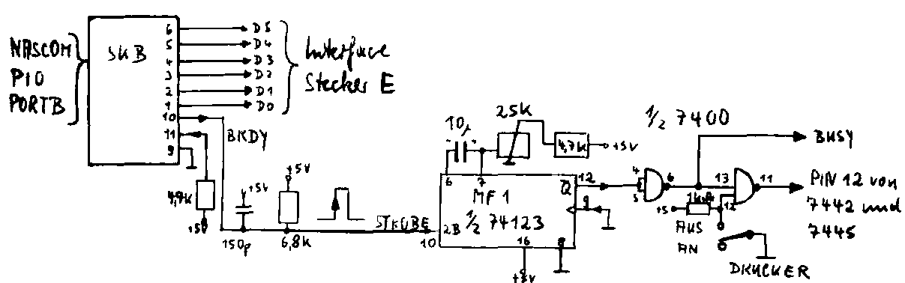

Nascom Journal |
0/80 |
Das folgende Z– 80 Programm ist für den Nascom 1 vorgesehen und arbeitet mit dem 2kByte Monitor Nasbug T4.
Es dient zur Ansteuerung des elektromechanischen Interface für elektrische Schreibmaschinen, beschrieben in der Funkschau, Heft 4/1980, S. 85-89 (Autor ist Rudolf Hofer)
Besonderer Wert wurde darauf gelegt, daß das 182 Byte lange Programm voll verschiebbar ist und somit ohne Änderungen ab beliebiger Adresse gestartet werden kann.
Lädt man die Startadresse auf den Bildschirmvektor 0C4B (low Byte), 0C4C (high Byte), so wird jedes Bildschirmzeichen gleichzeitig ausgedruckt.
Beliebige Speicherbereiche lassen sich dann mit der Tabulate-Monitorroutine hexadezimal ausdrucken.
Das Programm arbeitet als Subroutine und kann in Assembler mit einem CALL aufgerufen werden. Mit CALL Startadresse + 5 wird das Asciizeichen des Accus ausgedruckt, ohne zur Anzeige zu gelangen.
Es wird empfohlen, das Druckerprogramm zunächst ab 0F00’H einzugeben, um so bequem die unten aufgeführten Anpassungen an die verwendete Schreibmaschine durchführen zu können.

| Seite 6 von 12 |
|---|